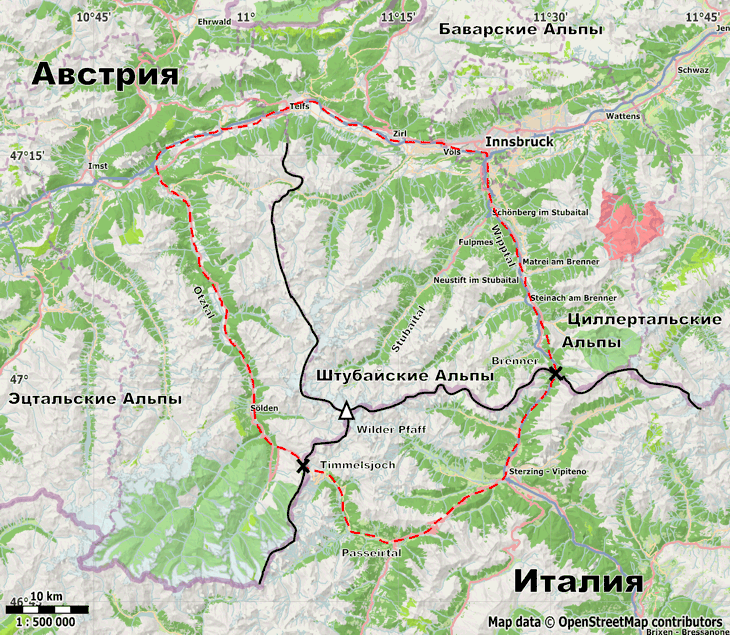

Штубайские Альпы (нем. Stubaier Alpen) – район восточных Альп, расположенный на Австрийско-Итальянской границе к юго-востоку от гор. Innsbruk. С запада и востока район ограничен долинами Ötztal и Wipptal соответственно. Северная граница проходит по долине реки Inn. Южная граница района проходит по долине Passeirtal. Ближайшими к Штубайским Альпам австрийскими городами являются Innsbruk и Solden. В долине Stubaital расположены города Telfes, Fulpmes и Neustift. Ближайшими итальянскими городами являются Sterzing (ит. Vipiteno) и Meran (ит. Merano).
Штубайские Альпы расположены на территории исторического региона Тироль, разделенного в настоящее время между Италией (область Южный Тироль) и Австрией (Федеральная земля Тироль). Для подавляющая части Южного Тироля (отошедшего к Италии после Первой мировой войны) родным является немецкий язык, поэтому все географические объекты имеют в Южном Тироле два официальных названия – немецкое и итальянское. Применительно к горному туризму чаще употребляются немецкие названия, эта традиция сохранена и на данном сайте.
Главный водораздел Штубайских Альп проходит по горному хребту, идущему от перевала Timmelsjoch (соединяющего долины Ötztal и Passeirtal) на север до вершины Wilder Pfaff и далее на запад до пер. Brennerpass. По водоразделу проходит Австрийско-Итальянская граница. Северная часть Штубайских Альп относится к бассейну Дуная, впадающего в Черное море. Итальянская часть района относится к бассейну реки Адидже, впадающей в средиземное море.
Водораздел – наиболее высокий участок района — является, по нашему мнению, наиболее привлекательной с точки зрения построения высокогорного маршрута частью Штубайских Альп. На водоразделе, либо вблизи него находятся самые высокие вершины района: Zukerhüttl (3507), Wilder Pfaff (3456) и Wilder Friger (3418). Там же находятся крупные по площади ледники.
Австрийская часть Штубайских Альп популярна у туристов: по ней проходит густая сеть обустроенных троп, есть большое количество приютов и гостиниц. Наиболее обустроенной является долина Stubaital, в которой расположено несколько крупных горнолыжных курортов с развитой инфраструктурой. Но туристов, ищущих длительных автономных походов, зрелище подъемников, подготовленных склонов и технических дорог вряд ли вдохновит.
Итальянская часть Штубайских Альп на фоне австрийской кажется «дикой». Да, есть сеть хижин и маркированных троп, но туристов там меньше. Некоторые хижины находится в труднодоступных местах: так Mullerhütte и Becherhause стоят на скальных утесах, возвышающихся над ледниками, на высоте более 3 км. Путь к ним лежит по сложным тропам, идущим по ледникам, траверсам крутых скальных склонов и скальным гребням. Часть района, вполне доступная для туристов, вообще не покрыта регулярными тропами. Все это делает южную часть Штубайских Альп привлекательной для длительных походов. Обратной стороной этой дикости является скудность информации о южной части района.

Рис. map. Штубайские Альпы.
(далеко не исчерпывающий список!)